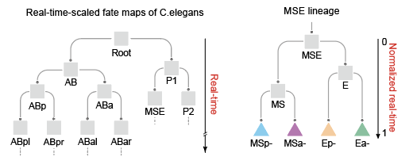
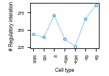
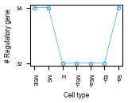
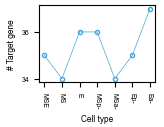
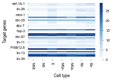
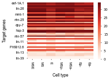

Example of Caenorhabditis elegans dataset (Core)¶
In this tutorial, we utilized gene expression data and chromatin co-accessibility data, encompassing 34 regulatory genes and 41 target genes, along with the well-characterized C. elegans cell lineage, to infer gene regulatory networks and visualize their dynamic reconfiguration along the lineage.
This example demonstrates how to identify key regulatory genes driving cell differentiation and distinguish between specific and constitutive regulatory interactions at various developmental stages.
import os
import pandas as pd
from lineagegrn.cell_lineage_reconstruction import *
from lineagegrn.gene_regulatory_network import *
from lineagegrn.plot.plot_analysis_results import *
from lineagegrn.downstream_analysis import *
Data Preprocessing¶
This section provides an overview of the preprocessing steps applied to the datasets used in this study. The data includes scRNA-seq data, and scATAC-seq data, which were processed using standard methods widely adopted in the field. Below, we outline the preprocessing logic and describe the final input formats required for the pipeline.
ATAC-seq Data Preprocessing¶
Overall Workflow:
Input Data: -The raw data consists of three files that were processed using the
ciceropackage.Chromatin Co-accessibility: -After processing, two peaks (
peak1andpeak2) were identified as chromatin fragments, along with a co-accessibility score (co-access). Rows withco-accessvalues less than 0.1 were removed.Mapping Peaks to Genes:
peak2fragments were matched to gene IDs.The gene IDs were further matched to gene names, which were identified as target genes.
Motif Scanning on
peak1:Motif scanning was performed on
peak1regions to identify the transcription factors (TFs) that bind to each peak.A single
peak1may have multiple motif IDs, indicating that a chromatin fragment can bind multiple TFs. Consequently, one target gene may have multiple regulatory genes.
Final Matching:
peak1was matched to regulatory genes (TFs), andpeak2was matched to target genes.The final dataset links:
A single
peak1to multiple regulatory genes (TFs).A single
peak2to one target gene.The co-accessibility (
co-access) score represents the shared score between the target gene and its regulatory genes.
scRNA-seq Data Preprocessing¶
Overall Workflow:
Input Data: -The input data for scRNA-seq analysis is typically organized as a gene × cell matrix
Quality Control:
Cells with low gene expression levels or signs of cell death were removed.
Highly Variable Genes (Optional):
Highly variable genes were selected for further analysis to focus on biologically significant variation.
Normalization:
Gene expression levels were normalized such that the average expression of genes in each cell was standardized to 0, and the variance was standardized to 1.
Final Input Formats¶
The final inputs for gene regulatory network inference are as follows:
scATAC-seq Data:¶
Columns:
Regulatory Gene: The name of the regulatory gene associated withpeak1, derived from motif scanning.Target Gene: The name of the target gene associated withpeak2, based on genomic position annotation.Co-access Score: The co-accessibility score calculated by theciceropackage, representing the prior regulatory relationship strength.Cell Cluster ID/Cell Type: The cluster ID or cell type to which the cell belongs, providing additional context about the regulatory relationship.
Example:
Regulatory Gene (TF) |
Target Gene |
Co-access Score |
Cell Cluster ID/Type |
|---|---|---|---|
GENE_A |
GENE_D |
0.45 |
Cluster_1 |
GENE_B |
GENE_D |
0.32 |
Cluster_2 |
GENE_C |
GENE_E |
0.28 |
Cluster_3 |
scRNA-seq Data:¶
Columns:
Gene Name: Name of the gene (e.g., GENE_A).Cell Name: Unique identifier for each cell.Gene Expression: Normalized gene expression value.Cell Cluster ID/Cell Type: The cluster or cell type label for the cell.Gene Type: EitherRegulatory GeneorTarget Gene.
Example:
Gene Name |
Cell Name |
Gene Expression |
Cell Cluster ID/Type |
Gene Type |
|---|---|---|---|---|
GENE_D |
Cell_1 |
1.23 |
Cluster_1 |
Target Gene |
GENE_A |
Cell_2 |
2.45 |
Cluster_2 |
Regulatory Gene |
References and Tools Used¶
ATAC-seq Data Preprocessing:
Cicero R package for chromatin co-accessibility analysis.
Motif scanning performed using motifmatchr.
scRNA-seq Data Preprocessing:
Time-scaled cell fate map retrieval¶
In this example, we directly use the well-established cell lineage tree of Caenorhabditis elegans. Six subtrees of the lineage are used as cell fate maps.
Taking the MSE-lineage as an example, we input the topological structure of a cell fate map using the Dict data type. The cell fate map can then be generated by instantiating an object of the FateMap class.
fate_map_path='examples/data/C.elegans/C.elegans_Core/input_data/MSE/edge_dict_MSE.csv'
edge_dict=load_fate_map_topology(fate_map_path)
edge=parse_edge_dict(edge_dict)
fate_map=FateMap(edge)

Gene regulatory network inference¶
Input single-cell gene expression and co-accessibility profiles¶
atac_file_path = "examples/data/C.elegans/C.elegans_Core/input_data/MSE/atac_data.csv"
expression_file_path = "examples/data/C.elegans/C.elegans_Core/input_data/MSE/expression_data.csv"
Run the gene regulatory network inference function¶
This step generates a dataframe for each target gene. The dataframe contains a number of rows equal to the number of cell clusters and columns corresponding to the number of regulatory genes.
The first column represents the name of the target gene.
The second column corresponds to the cell cluster id, indicating the specific node in the regulatory network.
The third to the last columns capture the regulatory relationship between the target gene and its regulators, including:
The regulatory strength, which quantifies the effect of each regulator on the target gene.
The regulation mode, specifying whether the regulation is activation or repression.
saved_dir = 'examples/results/C.elegans/C.elegans_Core/MSE'
regulator_names = list(pd.read_csv('examples/data/C.elegans/C.elegans_Core/additional_input_data/regulatory_genes_name.csv',index_col=0).iloc[:,0])
target_gene_names = list(pd.read_csv('examples/data/C.elegans/C.elegans_Core/additional_input_data/target_genes_name.csv',index_col=0).iloc[:,0])
grn_inference = GRNInference(atac_file_path, expression_file_path,fate_map, saved_dir)
grn_inference.estimate_all_target_genes()
2024-09-24 11:32:58,551 - INFO - 52272 Start fitting target_gene_id:eef-1A.1
2024-09-24 11:34:56,762 - INFO - 25168 Finish inferencing leaves grn value for target_gene_id:eef-1A.1
2024-09-24 11:34:56,763 - INFO - 25168 Saved grn values for target_gene_id:eef-1A.1
...
This step generates the target gene network for each target gene and stores it in a Dict using the method .get_target_networks.
In this method, a regulatory strength threshold (default: 0.1) is applied to filter out ineffective regulatory interactions. Only interactions exceeding this threshold are included in the resulting network, ensuring the biological relevance and computational robustness of the analysis.
target_networks_dict=grn_inference.get_target_networks(0.1)
Downstream analysis¶
Revealing how inferred GRNs reconfigure along cell lineages¶
regulator_dict=get_regulators('nhr-25', 'Ea-', saved_dir, regulator_names)
{'ceh-16': 0.3416499361653389, 'ceh-32': 0.5666916385389806, 'nhr-23': -0.4925718598273363, 'nhr-2': 0.24816905174646298, 'ceh-27': 0.1109726233953044, 'mab-5': -0.5323998868840484, 'nob-1': 0.23886076979862184, 'ceh-36': 0.5233501635329588, 'lin-1': 0.2897392528846144, 'eor-1': -0.4594620129243684, 'elt-2': 0.2976629236568841, 'irx-1': -0.13928695618132647, 'pal-1': 0.2489742931460235, 'nhr-79': -0.254491892554381, 'nhr-67': -0.27121213967865765, 'pha-4': 0.27487150765088963, 'nhr-25': 0.30274213501027825, 'dpl-1': 0.18021229240405684, 'hlh-16': 0.16969014424893344, 'elt-1': 0.36983762199901216, 'die-1': -0.8442123287166449, 'mnm-2': 0.7498769338962882, 'ref-2': 0.3727797808889699, 'lsy-27': -0.1369907430615935, 'B0310.2': -0.6490667615035224, 'dmd-4': -0.6883133898208357, 'end-1': 0.33351354696441643, 'end-3': -0.3033015231479436, 'tbx-37': 0.13312002995799968, 'hlh-1': 0.20481617473191782, 'ref-1': 0.3388880575957087, 'egl-5': -0.32889328111019744, 'elt-7': 0.2227128886808342, 'hlh-26': 0.19039319833013132}
target_dict=get_target_genes('elt-7', 'Ea-', saved_dir, regulator_names)
{'ama-1': 0.12514667502715765, 'B0310.2': -0.5690056949430876, 'B0336.3': -0.20087389262169697, 'ceh-16': 0.20728454926555562, 'ceh-27': -0.37076693848880266, 'ceh-43': 0.14481679327711647, 'die-1': 0.3327874528028564, 'dpl-1': 0.9878740137951658, 'dpy-31': 0.12992381853423898, 'dpy-7': 0.32438275516616405, 'dve-1': -0.28369422531295474, 'eef-1A.1': 0.13208107870118843, 'elt-1': 0.1485771897337543, 'elt-6': -0.3187646539838563, 'elt-7': -0.1953150517426333, 'F16B12.6': 0.13044802075213238, 'his-72': -0.1813583591231202, 'hlh-1': 0.2157784109364843, 'hmg-1.2': -0.13887148392408816, 'hmg-11': 0.09813520413087781, 'hsp-3': 0.24737695149461586, 'irx-1': -0.2025020427447795, 'isw-1': 0.05843540247802143, 'lin-1': 0.3000627454486636, 'lin-11': -0.034702965083833526, 'lin-13': 0.07181059724759799, 'lin-26': 0.14910339699633657, 'lin-39': 0.047706651933201984, 'lir-2': -0.006536041410562453, 'mab-5': -0.05103641530899973, 'mep-1': 0.2284986996612302, 'mml-1': -0.13379086742843393, 'nhr-23': 0.2373577819074984, 'nhr-25': 0.2227128886808342, 'nhr-49': 0.0037408606991700503, 'nhr-57': 0.13837017790147818, 'nhr-68': -0.3052208724250098, 'nob-1': 0.10537876339917188, 'pbrm-1': 0.22186185639658834, 'sma-9': 0.1577509253281303, 'tps-2': 0.17392960836027058}
Visualization¶
Visualization of the change in the total number of regulatory interactions in the gene regulatory network along the fate map.
output_path='examples/results/C.elegans/C.elegans_Core/figures/'
path=list(fate_map.nodes.keys())
plot_dynamic_edges_number(dynamic_networks_dict,path,output_path)

Visualization of the change in the number of target genes regulated by the regulatory gene ‘elt-7’ along the fate map.
plot_dynamic_regulator_number(saved_dir, regulator_names,'elt-7', path, threshold=0.05,output_path)

Visualization of the change in the number of regulatory genes which regulate the expression of target gene ‘elt-7’ along the fate map.
plot_dynamic_target_gene(saved_dir, regulator_names, 'elt-7', path, 0.05,output_path)

Visualization of the changes in the number of negative regulation of each target gene along the fate map.
plot_dynamic_regulator_number_heatmap(target_gene_names, regulator_names,'negative',saved_dir, path,0.1, output_path)

Visualization of the changes in the number of positive regulation of each target gene along the fate map.
plot_dynamic_regulator_number_heatmap(target_gene_names, regulator_names,'positive',saved_dir, path,0.1, output_path)

Visualization of the changes in the total number of regulation of each target gene along the fate map.
plot_dynamic_regulator_number_heatmap(target_gene_names, regulator_names,'total',saved_dir, path,0.1, output_path)

Visualization of the dynamic regulatory networks of the regulatory gene ‘elt-7’ along the fate map.
plot_dynamic_regulatory_network('elt-7',dynamic_networks_dict,path,output_path,0.1,figsize=(16,2))

Visualization of the changes in the regulatory strength of each regulatory gene on the fate map path (with ‘Ea-’ as the leaf node) on the target gene ‘nhr-25’.
path=fate_map.get_path("Ea-")
plot_dynamic_regulatory_strength(saved_dir,path,regulator_names,'nhr-25',output_path)

Visualization of the comparison results of the activity of the regulatory gene ‘nhr-25’ at different nodes of different fate maps.
map_df = pd.read_csv('examples/data/C.elegans/C.elegans_Core/additional_input_data/fate_map_topology.csv')
edges_dict_Celegans = {}
for top_key, group in map_df .groupby("Lineage"):
sub_dict = {f"{row['Parent']}->{row['Child']}": row['Length'] for _, row in group.iterrows()}
edges_dict_Celegans[top_key] = sub_dict
input_path=os.path.dirname(saved_dir)
plot_dynamic_regulator_activity(edges_dict_Celegans,input_path,'nhr-25',regulator_names,0.35,output_path)

Identifying key regulatory genes driving cell differentiation¶
This step outputs the results of the inferred key regulatory genes that determine the differentiation direction of downstream cells at each progenitor cell cluster (node). It is a pandas.DataFrame containing 8 columns: regulator_id, positive_regulatory_strength, positive_regulation_number, negative_regulation_number, PRS, PRN, and node_id.
key_regulators_df_concat=pd.DataFrame()
for lineage in edges_dict_Celegans.keys():
edges = parse_edge_dict(edges_dict_Celegans[lineage])
fatemap = FateMap(edges,high_expression_genes[lineage])
nodes=fatemap.node_internals[::-1]+[fatemap.node_root]
for node in nodes:
input_path=os.path.join(os.path.dirname(saved_dir),lineage)
key_regulators=find_diff_genes(input_path,fatemap,0.05,regulator_names,target_gene_names,node)
high_expression_genes_of_ancestor_node=list(set(key_regulators.loc[((key_regulators['PRS']>0.2) & (key_regulators['PRN']>0.7)),'regulator_id']) & set(target_gene_names))
high_expression_genes[lineage][node]=high_expression_genes_of_ancestor_node
fatemap = FateMap(edges,high_expression_genes[lineage])
key_regulators_df_concat=pd.concat([key_regulators_df_concat,key_regulators])
regulator_id positive_regulatory_strength positive_regulation_number negative_regulation_number PRS PRN node_id
ceh-16 3.571054 9.0 0.0 0.396784 1.0 E
ceh-36 3.414377 9.0 0.0 0.379375 1.0 E
nhr-2 3.340567 8.0 0.0 0.417571 1.0 E
elt-7 3.424669 7.0 0.0 0.489238 1.0 E
nhr-79 2.417552 6.0 0.0 0.402925 1.0 E
... ... ... ... ... ... ...
nhr-67 0.034049 4.0 4.0 0.008512 0.5 P2
Visualization¶
nodes=list(key_regulators_df_concat['node_id'].drop_duplicates())
plot_diff_genes(key_regulators_df_concat,nodes,regulator_names,output_path,figsize=(5,2.5))

Identifying specific and constitutive regulatory interactions.¶
This step outputs the clustering results of each regulatory relationship using fuzzy C-means clustering method. X is a pd.DataFrame, where each row represents a regulatory relationship, each column represents a node in the fate map, and each element is 0 (the regulatory relationship dose not exist in the node) or 1 (the regulatory relationship exists in the node); centers are the centers of the edge clusters; weight_matrix is the membership function of each regulatory relationship in each edge cluster.
X,centers,weight_matrix=run_fuzzy_C_means_clustering(saved_dir,fate_map, 0.3, regulator_names, target_gene_names, len(regulator_names),len(target_gene_names), 5, 2)
( MSE MS E MSp- MSa- Ep- Ea-
0 1 1 1 1 1 1 1
1 1 1 1 1 1 1 1
2 1 1 1 1 1 1 1
3 1 1 1 1 1 1 1
4 1 1 1 1 1 1 0
... ... .. .. ... ... ... ...
1389 1 1 1 1 1 1 1
1390 0 0 0 0 0 0 0
1391 0 0 0 0 0 0 0
1392 0 0 0 0 0 0 0
1393 1 1 1 1 1 1 1
[1394 rows x 7 columns],
0 1 2 3 4 5 6
0 0.046258 0.032178 0.117197 0.039124 0.050451 0.043458 0.947314
1 0.188813 0.045104 0.963920 0.054591 0.113503 0.880305 0.834711
2 0.990004 0.983410 0.980623 0.963207 0.947537 0.936966 0.961219
3 0.933149 0.971438 0.075477 0.961343 0.821624 0.095924 0.134773
4 0.007278 0.008996 0.011875 0.014350 0.015490 0.014834 0.008857,
EdgeCluster_1 EdgeCluster_2 EdgeCluster_3 EdgeCluster_4 \
ceh-16->eef-1A.1 0.001904 0.003105 0.989338 0.004157
ceh-16->nhr-23 0.001904 0.003105 0.989338 0.004157
ceh-16->elt-1 0.001904 0.003105 0.989338 0.004157
ceh-16->hlh-1 0.001904 0.003105 0.989338 0.004157
...
hlh-26->dpl-1 0.998029
hlh-26->mab-5 0.998029
hlh-26->lin-39 0.001495
[1394 rows x 5 columns])
edges_cluster_to_nodes=map_edge_clusters_to_nodes(saved_dir, fate_map,0.1, regulator_names,target_gene_names,5,0.3,X,len(regulator_names),len(target_gene_names),weight_matrix)
EdgeCluster_1 EdgeCluster_2 EdgeCluster_3 EdgeCluster_4 EdgeCluster_5
MSE 0.000000 0.208333 1.000000 0.949686 0.000000
MS 0.000000 0.000000 1.000000 1.000000 0.000000
E 0.000000 1.000000 1.000000 0.000000 0.000000
MSp- 0.008929 0.023810 0.936877 0.981132 0.029046
MSa- 0.071429 0.148810 0.906977 0.792453 0.053942
Ep- 0.000000 1.000000 0.860465 0.113208 0.000000
Ea- 1.000000 0.744048 0.930233 0.163522 0.000000
Visualization¶
plot_edge_cluster_weight(weight_matrix,output_path)

plot_edge_cluster_to_nodes(edges_cluster_to_nodes, output_path)